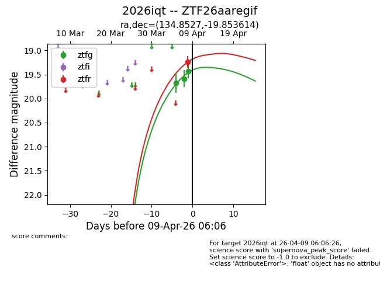
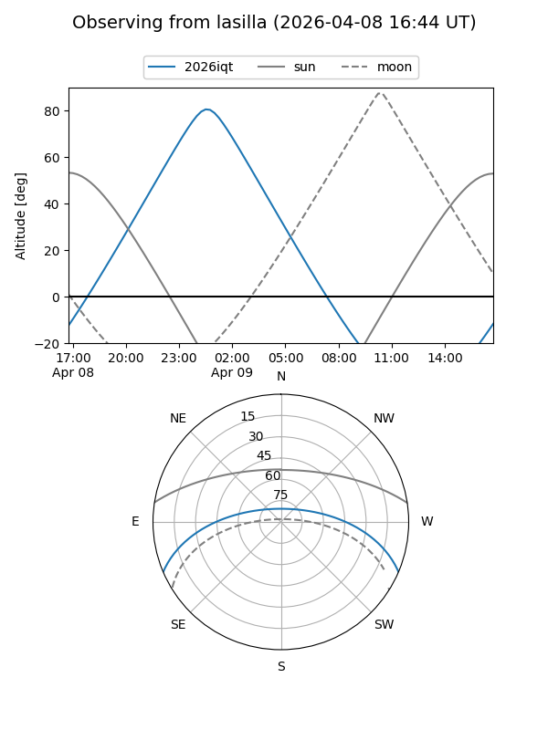
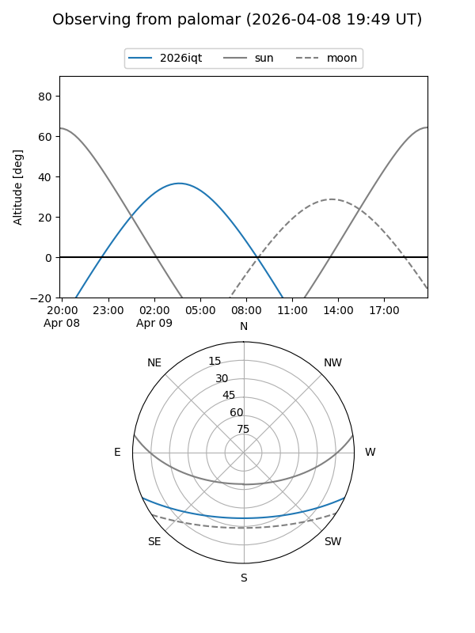
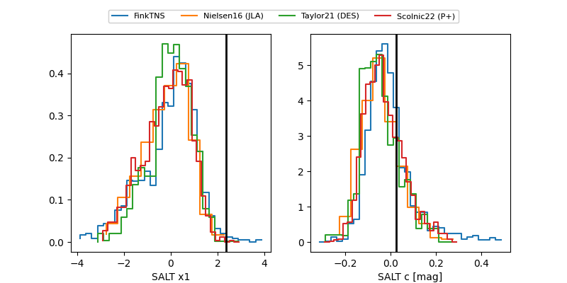

2026iqt
Target 2026iqt at 2026-04-09 06:13
Aliases and brokers:
FINK: link
Lasair: link
ALeRCE: link
TNS: link
YSE: link
alt names
ZTF26aaregif (ztf,fink_ztf)
2026iqt (tns,yse)
Coordinates:
equatorial (ra, dec) = 134.8527,-19.85361
equatorial (HMS+DMS) = 08:59:24.65,-19:51:13.01
galactic (l, b) = (246.5067,+16.77692)
Flags:
Photometry:
last ztfg=19.43, ztfr=19.24
3 ztfg, 1 ztfr detections
Lightcurve

Visibility


Additional plots
